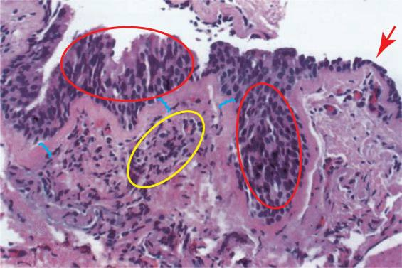

| Pulmonary Microscopic
Pathology Image 1 |
|
|  | |
| There is intact hyperplastic airway epithelium (red ellipses) showing disarray, and there is an area of denudement (red arrow). The basement membrane is markedly thickened (blue brackets) with collagen deposition. There is only minimal inflammation, with a patchy lymphocytic infiltrate immediately below the basement membrane (yellow ellipse). Smooth muscle cells are increased in number, and in size. | |